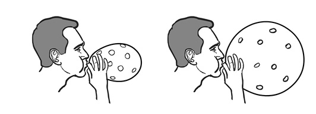
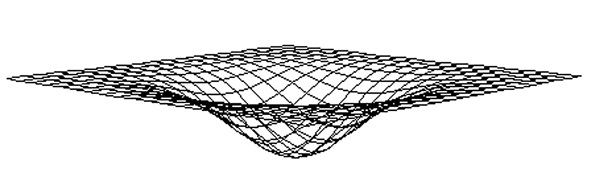
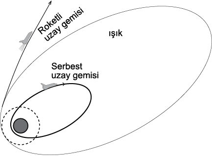
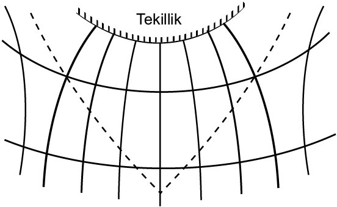
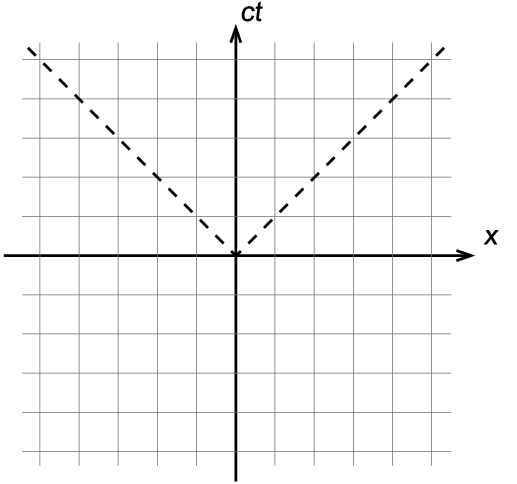
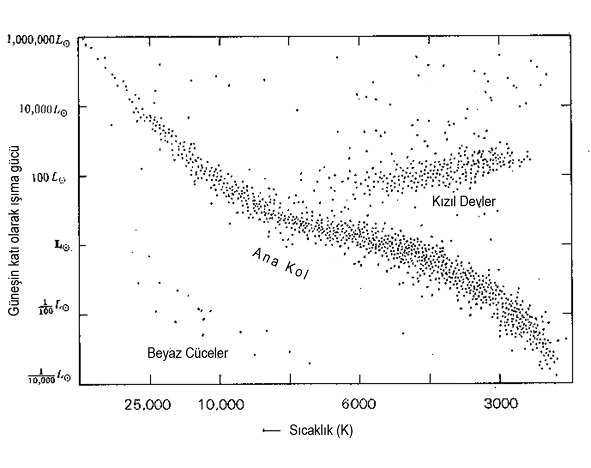

Şekil 51. Düz bir uzay-zamana ait bir zaman × uzay kesiti. Cisimlerin hareket yönü, zaman yönündeki çizgilerden 45°’den fazla sapamaz.
6. Bölüm: - KOZMOLOJİ
41-Evrenin genleşmesi ne demek? Nereye doğru genleşiyor? Her şey mi genleşiyor? Ben de genleşiyor muyum?
- Evrenin genleşmesi ne demek?
- Bunu 1929’da Edwin Hubble keşfetti. Hubble, önce “sarmal bulutsu”ların -en azından bazılarının- uzaklıklarını ölçmenin yolunu buldu; bunların bizim Samanyolu gökadamızın büyüklüğüne göre çok uzakta olduklarını, dolayısıyla onların da Samanyolu gibi birer gökada olduklarını gösterdi. Sonra daha fazla gökadanın uzaklıklarını ölçünce, bunların uzaklıkları arttıkça bizden artan bir hızla uzaklaştıklarını buldu ve bunu Hubble yasası dediğimiz şekilde ifade etti: v = Hd. Bu H’ye Hubble sabiti denirdi, şimdi Hubble parametresi deniyor.
- Neden?
- Sabit denince genellikle değişmez gibi anlaşılıyor. Halbuki kastedilen, d’den yani mesafeden bağımsız olması; H zamanla değişebiliyor.
- Böyle bir şey bulmak için her gökadanın hızını ve mesafesini ölçmek gerek. Nasıl yapılıyor bu?
Hız nispeten kolay. 25. Soru’nun sonunda konuştuğumuz gibi, çeşitli atomların yaydığı ya da soğurduğu ışınım frekanslarının Doppler kaymaları kullanılarak belirlenebiliyor. Mesafeler nasıl ölçülüyor sorusuna ise, “büyük güçlüklerle” diyerek cevap verebilirim. Çünkü, hiçbir mesafe ölçme yöntemi tüm ölçeklerde işe yaramıyor; 8-10 farklı yöntem, her biri kendininkinden küçük ölçekteki yöntemin üzerine bina ediliyor. Örneğin Hubble’ın kullandığı yöntem, Sefeid denilen bir grup yıldızın gözlemine dayanıyor. Bunlar nadir rastlanan (Samanyolu’ndaki yaklaşık 100 milyar yıldızın arasında bunlardan 1000 kadar var) bir yıldız türü; özelliği, parlaklığının periyodik olarak değişmesi ve bu değişim periyodunun ışıma gücünün bir fonksiyonu olması. Periyot kolayca ölçülebildiği için, bu ilişki bilinince ışıma gücü de bulunmuş olur. Işıma gücü bilinen cisimlere astronomide standart mum63 denir ve mesafe ölçümünde kullanılabilirler—
63)İngilizce: Standard candle.
- Çünkü ışıma gücü aynı olan iki cisim farklı parlaklıklarda gözüküyorsa, zayıf gözükeni daha uzaktır. Işıma güçleri aynı değilse bile, ne olduklarını biliyorsam, görünen parlaklıktan mesafeyi kolayca hesaplarım...
- Ancak, iş ışıma gücünü bulabilmekte, yani bahsettiğimiz ilişkiyi bilmekte. Bu ilişki 1912’de Henrietta Leavitt adındaki bir hanım tarafından, Macellan Bulutları denen, bizim gökadamızın hemen dışındaki bir çift cüce gökadadaki Sefeid’leri incelenirken fark edildi. Tabii ki bunun size verdiği yalnızca orantılar. Periyodu daha uzun olanın daha parlak olduğunu görüyoruz ve hepsi aynı cüce gökadanın içinde olduklarından, bizden uzaklıkları yaklaşık olarak aynı, dolayısıyla parlaklıkları ışıma güçlerinin bir ölçüsü. Ancak ışıma güçlerini mutlak değer olarak bulmak için, Macellan Bulutları’na olan uzaklığı başka bir yöntemle bulmak zorundayız; Sefeid’leri burada standart mum olarak kullanamayız.
Bu yapıldıktan sonra ise, diğer gökadalardaki Sefeid’leri -ki şansımıza Sefeid’ler nispeten yakın gökadalarda (milyonlarca ışık yılı uzaklıktan) görebileceğimiz kadar parlaklar- standart mum olarak kullanarak o gökadaların uzaklıkları belirlenebilir; Hubble’ın yaptığı da buydu.64 Ancak, yakın Sefeid’lerin uzaklıklarını belirlemek için kullandığımız yöntemde bir hata varsa, o zaman bulduğumuz Sefeid ışıma gücü-periyot ilişkisi de hatalı olur, dolayısıyla Sefeid’leri kullanarak ölçtüğümüz daha büyük uzaklıklara da hata karışır. İşte bütün o farklı uzaklık ölçme yöntemleri, birbirlerini bu şekilde etkiliyorlar, bu yüzden “büyük güçlüklerle” dedim biraz önce uzaklık ölçümü için.
64)Hubble’ın çalışma arkadaşlarından birisi ilginçtir: Milton Humason, 14 yaşından sonra okumamış, gözlemevine malzeme taşıyan kervanda çalışan bir katırcıymış. (Gözlemevi bir dağın zirvesinde olduğundan katırla ulaşılıyormuş.) Sonra orada hizmetli olmak istemiş ve kabul edilmiş. Merakından, yavaş yavaş astronomların ufak tefek laboratuvar işlerini yapmaya başlamış, zamanla işi ilerletmiş. Meraklı ve yetenekli olduğunu gören müdür; bırakın doktorayı, lise diploması bile olmadığı halde, Humason’a bilimsel kadro vermiş. Humason, Hubble ile birlikte çalışmış ve Hubble yasası için gerekli gözlemlere önemli katkısı olmuş. Ölümünden sonra ayda bir kratere ismini vermişler…
- Hubble yasası, gökadaların daha hızlı olanlarının bizden daha uzakta olduğunu gösteriyor. Bunu kafamızda zamanda geri çevirirsek, hepsi aynı zamanda bizim olduğumuz noktada toplanır. Yani tüm gökadalar bizim olduğumuz noktadan mı dağılmış?
- Hayır, biz evrenin merkezinde değiliz. Tüm gökadalardaki astronomlar Hubble yasasını bulurlardı... Bunu anlamak için, Şekil 46’da gördüğün pantografa65 bak. İlk eklemi sabitle, son eklemi saniyede 7 cm hızla çek. Diğer eklemlerin hızları, ilk eklemden uzaklıkları sırasıyla 1, 2, 3, 4, 5, 6 cm/s olur değil mi? Yani Hubble yasasını sağlarlar. Şimdi olaya üçüncü eklemin açısından bak. Birinci eklemin hızı (tabii ki cm/s olarak) -2’dir, ikinci eklemin -1, tabii ki üçüncünün 0; dördüncünün 1, beşincinin 2, altıncının 3, yedincinin 4. Yani ona göre de hızlar mesafeye orantılı olarak artıyor, hem de orantı sabiti de aynı. Yani o da kendini merkez olarak kabul edebilir...
65)Bu tip düzenekler, eskiden, fotokopi makineleri ve tarayıcı-bilgisayar-yazıcı üçlüsü yokken, bir şekli büyütmek ya da küçültmek için kullanılırdı: Düzeneğin bir ucu sabitlenir, yazmayan bir tür kalem düzeneğin sabit uca yakın bir eklemine, yazan kalem sabit uca uzak bir eklemine yerleştirilir, yazmayan kalem ile şeklin çizgileri üzerinden geçilince, yazan kalem şeklin daha büyük bir kopyasını çıkarırdı. (Tabii ki kalemleri değiştirerek küçültme yapılabilirdi.) Ayrıca fotoğrafçılıkta kullanılırdı, bir de muzip çizgi film karakterleri uzaktaki nesneleri yakalamak için kullanırlar.
Sonuç olarak Hubble yasası tüm gökadaların adeta bir patlamada dağılan şarapnel parçaları gibi birbirinden uzaklaştıkları anlamına geliyor. Ancak—
- Big Bang, yani Büyük Patlama dedikleri bu mu?
- Bir bakıma evet. Ama biz, “Büyük Patlama modeli” derken, yalnızca genleşmeyi kastetmeyiz. Ayrıca evrenin geçmişte—
- Bir dakika, aklıma bir şey geldi... Konuyu biraz dağıtıyorum galiba ama, “kozmik ardalan ışınımı” diye bir şey duydum, Büyük Patlama’dan kalmış. Ama en hızlı şey ışık olduğuna göre, Büyük Patlama’da ortaya çıkan ışığın -ya da fotonlar diyelim- patlama noktasından ışık hızıyla uzaklaşıp, diğer her şeyi arkasında bırakması gerekmez miydi? Nasıl görüyoruz bu ardalan ışınımını?
- Büyük Patlama, önceden varolan boş bir uzayda, bir noktaya sıkıştırılmış maddenin bir patlamayla etrafa saçılması değildir de ondan. Uzayın kendisinin çok çok küçük boyutlardan genleşmesidir. Dolayısıyla, Büyük Patlama tek bir yerde değil, evrenin her yerinde meydana gelmiştir.
- Nasıl yani?
- Yine bir benzetme ile anlatayım: Evreni, şişen bir balon ile temsil edelim (Şekil 47):

Şekil 47. Genleşen evren için bir model. Çizim: Barış Mengütay.
Gökadalar arasındaki mesafelerin birbiriyle orantılı arttıkları benzetmeden görülebiliyor. Büyük Patlama’yı benzetmek için ise, geçmişe gidilince bunun sıradan bir balon gibi davranmayıp, şekilde gösterilen davranışı devam ettirdiğini düşünmek gerek. Bu durumda Büyük Patlama, tüm gökadalar arasındaki mesafelerin aynı anda sıfıra gitmesi, yani balonun yarıçapının sıfır olmasıdır. Peki, bu benzetmede Büyük Patlama balonun neresinde oluyor?
- Merkezindee...
- Tam doğru soramadım... Burada evreni temsil eden, balonun yüzeyi. Bu yüzden, gökadalar balonun yüzeyinde gösteriliyor, içinde yoklar; yani içinin de dışının da anlamı yok. (Soru 36’nın akıllı karıncalarını düşün.) Soruyu daha doğru şekilde tekrarlıyorum: Bu benzetmede Büyük Patlama balonun yüzeyinin neresinde oluyor?
- Galiba her yerinde...
İşte bu yüzden kozmik ardalan ışınımı görebiliyoruz, çünkü ışık, yüzeyde dolaşıyor.
Balonun üzerine bir koordinat sistemi çizdiğini düşün, dünya yüzeyindeki paralel ve meridyen çizgileri gibi. Yukarıdaki soruyu sormanın bir başka şekli de şudur: Bu benzetmede Büyük Patlama hangi koordinatlarda oluyor? Tabii ki cevabı, herhangi bir koordinat noktasında değil, tüm koordinatlarda. Öte yandan, biz zaman geçtikçe, daha uzak koordinatlardan gelen ardalan ışınımını görüyoruz.
- Peki balonun yüzeyine dik, yani yarıçap yönündeki koordinatın hiç mi bir anlamı yok? Yani evren “nereye doğru” genleşiyor?
- Bu soruyu sormak zorunda değilsin; o koordinata anlam vermeden de her şeyi yapabilirsin. Ama illa istiyorsan, ya da seni rahatlatacaksa, gözlemleyemediğimiz bir ek boyut olarak düşünebilirsin; zaten daha önce konuştuğumuz gibi (Soru 22) çok boyutlu kuramlar da var.
- Bu boyutu zaman olarak düşünebilir miyiz?
- Bu biraz riskli; ancak evrenin genleşmesinin durmayacağı modellerde yapabilirsin—
- Yani bazı modellerde genleşme duruyor, bazılarında durmuyor, öyle mi?
- Evet, genleşme hızı ve evrenin içeriği, geleceği belirliyor; aslında Newton fiziği kullansan da bu böyle, ama matematiksel ilişkiler biraz değişiyor. Her neyse, yarıçap yönündeki koordinatı zaman olarak düşündüğün durumda, evrenin genleşmesi durup geri dönünce, zamanın da geriye işlediğini varsaymak zorunda kalırsın.
- Bir soru daha... Balon kapalı, sonlu bir yüzey. Bu benzetme de evren için doğru mu?
- Balon ya da küre yüzeyi iki boyutlu. Üç boyutlu kapalı uzaylar da mümkün; yani öyle jeodezikler bulabilirsin ki, küre yüzeyindeki meridyenler gibi, kendi üzerine geri döner. Yani hep aynı yönde giderek başlangıç noktana dönebilirsin.66 Ancak evren kapalı olmak zorunda değil; açık, yani sonsuz da olabilir.
66)Bunu kapalı evrenin nasıl bir şey olduğunu anlatmak için söylüyoruz ve böyle bir evren genleşmiyor ise geçerli; ya da evreni bir anda dondurduğunuzu düşünün. Eğer evren genleşiyorsa, işler değişiyor, örneğin tekrar çöken bir modelde evrenin etrafında bu şekilde bir tur atmak için gereken süre, Büyük Patlama ile evrenin genleşmesinin durup, tekrar çökmesine kadar geçen süreden uzun.
- Tabii ki eğer evren, balonun iki boyutta eğri olduğu gibi eğri olabiliyorsa, genel görelilik önemli olmalı. Ama ona geçmeden genleşme hakkında bir sorum daha var: Genleşme, her şeyin genleşmesi mi demek? Gökadalar arası mesafeler genleşiyor, gökadalar da genleşiyor mu? Yıldızlar, gezegenler vs., tüm cisimler mi genleşiyor? Örneğin, ben de genleşiyor muyum?
- Nedir mesafe? Nasıl ölçersin? Elinde bir birim çubuk vardır, ölçeceğin mesafeye bu çubuğu art arda yatırırsın, dört defada mesafeyi bitirirsen, mesafenin uzunluğu dört birimdir. Hem mesafeyi, hem birim çubuğu üç ile çarpsan, mesafenin uzunluğu yine dört birim olur. Yani her şeyin aynı oranda genleşmesinin anlamı yoktur.
Dolayısıyla evrende her şey genleşmez. Peki ne genleşir? Dinamiği evrenin tamamı tarafından etkilenen uzunluklar, yani birbirine uzak gökadalar arasındaki mesafeler. Dinamiği yerel etkileşimlerle belirlenen uzunluklar ise genleşmez. Gökadalar genleşmez, hatta komşu gökadalar arasındaki mesafeler bile genleşmeyebilir. Yıldızlar, gezegenler, sen-ben de genleşmeyiz. Atomlar genleşmez, çünkü onların büyüklüğünün genelçekim ile ilgisi yoktur. Ne belirler atomların büyüklüğünü?
- Kuantum fiziği67 ve elektromanyetik etkileşim.
67)Bilenler için: Schrödinger denklemi.
- Aslında senin-benim büyüklüklerimiz de atomlar gibi kuantum ve elektromanyetizma etkileşimiyle belirlenir. Gezegenler ve yıldızların büyüklükleri bunlar ve yerel genelçekim ile, gökadaların büyüklükleri yerel genelçekim ile belirlenir. Şekil 47’deki gökada çizimlerinin balonla birlikte genleşmediklerini belki de fark etmişsindir; yani bu modelde koordinat sistemini balonun üzerine çizebilirsin, ama gökadaları çizmemeli, onları balona yapıştırılmış küçük düğmeler gibi düşünmelisin...
42-Evren konusunda genel göreliliğin getirdikleri nelerdir?
- Genel görelilik evren için ne kadar önemli? Diğer kuvvetlerin önemi ne?
- Güçlü ve zayıf nükleer kuvvetlerin -ki onlar 1915-17’de bilinmiyordu- menzili atom çekirdeklerinin dışına çıkamıyor; dolayısıyla bırak astronomi veya kozmolojiyi, günlük mekaniği bile etkilemeleri mümkün değil. Elektromanyetik kuvvet ise, birbirini çeken iki tür yüke sahip ve fazla güçlü—
- Güçlü olması niye onu önemsiz yapsın? Tam tersi olması gerekmez mi?
- O kadar güçlü ki, astronomik bir cismin net yükü olamıyor. Diyelim ki bir cisim pozitif yüklendi, hemen yakındaki negatif yükleri çeker ve bu şekilde net yükünü sıfırlar. Nötr olunca da elektromanyetik kuvvet yaratmaz ve ondan etkilenmez.
- Ya yakında negatif yük yoksa?
- Elektrik yük korunduğuna ve evrenin net yükü sıfır olduğuna göre, bir yerde pozitif yük varsa, başka bir yerde de negatif yük vardır; hatta yakında olmasını bekleriz, çünkü büyük ihtimalle bu pozitif yük, o negatif yükün uzaklaşması şeklinde ortaya çıkmıştır. Ayrıca ortada dolaşan yüklü parçacıklardan oluşan kozmik ışınlar da yük taşıyarak yüklü cisimleri uzun vadede nötr hale getirebilir.
- Ve meydan en zayıf etkileşim olan genelçekime kalır, öyle mi?
- Evren için öyle...
- Einstein, genel göreliliği evrene uygulayınca, evrenin genleşmesini öngördü tabii.
- İşin ilginci, genel görelilik genleşmeyi öngörür, ama Einstein öngörmedi.
- Nasıl yani?
- Einstein, evrenin durağan olması gerektiği konusunda derin bir fikre sahipti; o kadar ki, durağan çözüm bulabilmek için kuramı bile değiştirdi.
- Neden böyle bir fikre sahipti ki?
- O zamanki Avrupalı aydınlar, evrenin homojenlik, sonsuzluk ve durağanlık özelliklerinden tutarlı olabildiği kadar fazlasına (üçü birden olamaz, soru 40’tan Olbers paradoksunu hatırla) sahip olması gerektiğini düşünüyorlardı. Einstein da bu havadan etkilendi.
- Neden Avrupalı aydınlar bu özellikleri seviyorlardı?
- Bir kere bu konularda, yani kozmolojik ölçekte hiç gözlem yoktu, bizim gökadamız olan Samanyolu’nun bile boyutları ancak 1917’de belirlenebildi; gerçi bir gökada içinde bulunduğumuz 19. yüzyıl içinde anlaşılmıştı. Ancak dışarıda ne var, bilinmiyordu. Bir görüş, hiçbir şey olmadığıydı, yani Samanyolu bir sonsuzluk okyanusunun ortasında bir varlık adası olarak düşünülüyordu (“ada evren” fikri); bazıları da, uzaklarda başka “ada”ların olabileceğini savunuyordu.
Ancak, bu konuda kafa yoran aydınların çoğu, bir ölçekte evrenin homojen olması gerektiğini düşünüyordu; dayanak noktası da “genelleştirilmiş Kopernik ilkesi” diyebileceğimiz bir fikirdi: Kopernik, dünyanın Güneş Sistemi içinde özel bir yer olmadığını göstermişti, bu önce dünyanın (ya da Güneş Sistemi’nin) evrende özel bir yer olmadığı, sonra da evrende hiçbir özel yer olmadığı şeklinde genelleştirildi. Bu ilke, halen zaman zaman başka yönlere doğru da genelleştirilerek kullanılmaktadır.
Burada, benim şöyle bir yorumum var: Avrupa’da Bilimsel Devrim süreci, bilimciler ve kilise arasında bir mücadele şeklinde geçti. Sonunda bilimciler kazandı, ama

Şekil 48. Güneş ya da benzeri bir yıldızın merkezinden geçen bir düzlemin geometrisinin üç boyuta “gömülmüş” hali. Burada yüzey düzlemden aşağıya sarkmış değildir, zaten buradaki “aşağı”nın bir anlamı yoktur. Bu diyagramın amacı, herhangi iki nokta arasındaki gerçek mesafeyi göstermektir. Diyagramdaki yüzeyin bir düzlemden sapması, eğriliğin getirdiği mesafe uzamalarını göstermek içindir.
uzun ve zorlu mücadele, örneğin Kopernik’in kitabını basmaya ancak ölüm döşeğinde cesaret edebilmesi, Galileo ve engizisyon, Giordano Bruno’nun yakılması vb. bilimcilerin ve aydınların ortak hafızasında izler bıraktı ve adeta kilisenin her dediği yanlış olmalı refleksi oluşturdu. Örneğin kilise dünyanın özel olduğunu (evrenin merkezinde ve evren dünyanın hâkimi olan insanlar için var) söylüyor, Kopernik de bunun yanlış olduğunu göstermiş, genelleştirelim. Biz özel değiliz, kimse özel olmamalı, öyleyse evren homojen olmalı. Kilise evrenin bir başlangıcı olduğunu söylüyor68, öyleyse evren ezelden beri var olmalı, yani durağan (hareketliyse hareket ne zaman başladı?) olmalı. Kilise evrenin sonlu olduğunu söylüyor (gökküre-büyük felek ile bitiyor), öyleyse sonsuz olmalı... Ayrıca, Newton’a göre kütleler birbirini çekiyor, sonlu bir evren bir noktaya toplanırdı; ama sonsuz ve homojen bir evren, belki durağan kalabilir, çünkü hangi noktaya toplanacak? Tüm noktalar aynı, birini tercih etmek için sebep yok ki...
68)İrlandalı Kardinal Ussher’in hesabına göre MÖ 4004, 23 Ekim; bu da tabii ayrı bir hikâye…
- Ama üç özellik birden doğru da olamaz...
- Olbers paradoksundan dolayı bunu biliyorlardı ama, hangisini atacaklar? Gözlemsel veri yok...
Einstein işe bir kozmolojik ilke formüle ederek başladı: Evren homojen (türdeş) ve izotropiktir, yani evrenin içinde her nokta ve bakabileceğin her yön aynıdır.
- Neden homojenliği tercih etti?
- Aslında Einstein’ın kişisel tercihi, hem homojenlik, hem durağanlık yönünde (tabii bu durumda evren sonlu olmak zorunda); ancak ilkeye durağanlığı katmıyor. Bu tercihlerin felsefi sebebini bilmiyorum; ama matematiksel şöyle bir sebebi var: Genel göreliliğin Einstein denklemlerini korkunç basitleştiriyorlar: Kozmolojik ilke, evrenin geometrisi için olasılıkları üç taneye indirgiyor. Yani sonsuz olası metrik (Soru 36) arasında kozmolojik ilkeyi sağlayanlar bu üçü. Aslında bu üçü ortak bir şekilde yazılabiliyor ve o zaman Robertson-Walker (RW) metriği deniliyor. Bu üçü düz, açık ve kapalı diye ayırt ediliyor. Ayrıca epey basitler.

Şekil 50. “Siyah yıldız” ya da basit kara delik modeli, yani klasik fiziğe göre ışık hızıyla giden bir cismin bile sonsuza gitmesine izin vermeyecek kadar yoğun bir cisim. Bu model, gerçek kara deliği sonsuzdan görünmemek ve kritik yarıçap bakımından temsil edebilmekle beraber, birçok başka bakımdan iyi temsil edemez. (Metne bakınız.) Gerçek bir kara deliğin aksine, bu modelde kritik yarıçaptan içeri giren
bir cismin tekrar dışarı çıkma şansı vardır.
- Nasıl basit?
- Bu metrikler, olabilecek en simetrik üç boyutlu uzayların zaman ile genleşme veya büzülmesini betimliyor, içinde bilinmeyen fonksiyon olarak yalnızca bu genleşme veya büzülmeyi gösteren bir a(t) fonksiyonu var. Bu olabilecek en simetrik üç boyutlu uzayların metrikleri, tek bir (uzayda) sabit eğrilik parametresine sahip; eğer bu parametre sıfır ise uzay düz, pozitif ise üç boyutlu küre (bildiğimiz küre yüzeyine iki boyutlu küre denir), negatif ise üç boyutlu hiperboloid (maalesef iki boyutlu hiperboloidi bile görsel olarak bire bir canlandırmak mümkün değil) olur. Bu üç boyutlu kürenin hacmi sonlu, diğerlerininki sonsuzdur. Yüksek simetri yüzünden bu uzaylarda özel bir nokta yoktur, önceki sorudaki pantograf örneği gibi, istenen nokta “merkez” olarak alınabilir.69gore
69)Bu Nasreddin Hoca’nın, papazların “Dünyanın ortası neresidir?” sorusunu, “Eşeğimin sol arka ayağının olduğu yerdir, isterseniz ölçün!” diye yanıtlamasına benzer. Hoca iki bakımdan haklıdır: Birincisi, dünya yüzeyinin bir sınırı olmadığından ortası da yoktur, dolayısıyla belli amaçlar için (harita yapmak gibi) istediğin noktayı merkez kabul edebilirsin; ikincisi, cevabını ölçerek teyit edemeyeceğimiz sorular çok anlamlı olmayabilirler.

Şekil 52. Bir kara delik uzay-zamanına ait bir zaman × uzay kesiti. Cisimler yukarıya doğru hareket ederler ve hareket yönleri, zaman yönündeki çizgilerden 45°’den fazla sapamaz. Ancak düz uzayın aksine, burada bu çizgiler birbirine yaklaşır ve bazıları “tekillik”te biter. Bu yüzden, kesikli çizgiyi yukarı geçen cisimler tekilliğe çarpmak zorundadır.

Şekil 51. Düz bir uzay-zamana ait bir zaman × uzay kesiti. Cisimlerin hareket yönü, zaman yönündeki çizgilerden 45°’den fazla sapamaz.
Şekil 51. Düz bir uzay-zamana ait bir zaman × uzay kesiti. Cisimlerin hareket yönü, zaman yönündeki çizgilerden 45°’den fazla sapamaz.
Bu metriklerde düz, açık ve kapalı ifadeleri tüm uzay-zamanı değil, üç boyutlu uzayı niteliyor; eğrilik parametresi ise, a(t) fonksiyonu cinsinden veriliyor; Einstein denklemleri de 10 kısmi diferansiyel denklemden, a(t) cinsinden iki adi diferansiyel denkleme indirgeniyor.
Bu arada, yalnızca metriği değil, maddeyi, yani Einstein denklemlerinin sağ tarafını da düşünmek gerek. Evrenbilimde evreni dolduran madde, bir ideal akışkan olarak modellenir. Gökadalar, böyle bir akışkanın “atomları” gibi düşünülür—
- Ölçek farkının bundan çarpıcı bir ifadesi olmaz herhalde. Gökadalar evrenbilimciler için atom gibi...
- Bir ideal akışkanın iki “özelliği” var: Yoğunluk ρ (burada enerji yoğunluğu-kütle dahil) ve basınç p. Örneğin, gökadaların oluşturduğu akışkan için p = 0 alınır (gökadaların aralarında etkileşim olmadığı için), ancak evreni dolduran elektromanyetik ışınım (bir diğer deyişle, foton gazı) içinse p = ρ/3 geçerlidir. p = 0’ı sağlayan akışkanlara kısaca madde ya da toz, p = ρ/3’ü sağlayanlara da ışınım denir.
- Einstein, evrenin durağan olması gerektiğini düşünüyordu demiştiniz?
- Kozmolojik ilkeye durağanlık ve evrende maddenin baskın olması (ve tabii kapalılık) koşullarını ekleyince, elde edilen modele Einstein evreni deniyor. Ancak durağan demek, a(t) sabit demek; ama sabit a(t), pozitif ρ için denklemleri70 sağlamıyor71!
70)Matematiksel ayrıntı isteyenlere: Einstein denklemleri bize sonuçta iki faydalı denklem verir. (10 denklemin kimisi 0=0, kimileri de birbirinin aynısı çıkıyor.) Bunların birincisi -. Bu denklemde
a(t), evrenin büyüklüğünün bir ölçüsü (örneğin belli bir uzak gökadanın bize uzaklığı), v(t), evrenin genleşme hızı (örneğin aynı gökadanın bizden uzaklaşma hızı), ρ(t), evrenin yoğunluğu, c, ışık hızı, κ da bir sabit anlamına gelmektedir. k ise, evrenin geometrisini gösteren bir parametredir. Kapalı evren için k = +1, düz evren için k = 0, açık evren için, k = -1 geçerlidir. v/a kesiri tabii ki Hubble parametresidir.
İkinci denklem ise -. Bu denklemde i(t), evrenin genleşme ivmesini, p(t) ise evreni dolduran maddenin basıncını gösteriyor.
71)Matematiksel ayrıntı isteyenlere: Denklemlere v(t) = 0, i(t) = 0 (evrenin durağan olması) ve p(t) = 0 (evrenin madde-baskın olması) koşullarını koyarsak, ikinci denklem k = 0 verir. Bu hem ilk denklem ile [ρ(t) sıfır değil], hem de Einstein’ın kapalılık koşuluyla çelişir.
Bundan normalde çıkartılacak sonuç, evrenin durağan olamayacağı, yani genleşmekte ya da büzüşmekte olması gerektiğidir. Ancak, Einstein genel göreliliği henüz iki yıl önce geliştirmişti ve Merkür’ün yörüngesinin dönmesi konusundaki başarılı hesaba rağmen (Soru 39), kurama olan güveni, evrenin durağan olması gerektiği konusundaki inancı kadar güçlü değildi anlaşılan. Böylece Einstein evrenin durağan olmadığı sonucunu çıkaracak yerde, kuramda değişiklik yapma yoluna gitti.
- Nasıl bir değişiklik?
Einstein denklemlerinin çok karmaşık olduğunu söylemiştik (Soru 33)... Ama öte yandan, Einstein denklemleri belli kriterleri sağlayan en basit denklemlerdir. Einstein 1917’de ikinci en basit versiyonu kullanmanın daha uygun olduğuna karar verdi.72
72)Genelde, Einstein denklemleri çözdü, durağan çözüm olmadığını görünce denklemleri değiştirdi diye anlatılır. Halbuki orijinal makaleye bakınca, Einstein’ın çözümü kabul edip, denklemleri sağlayıp sağlamadığına baktığı görülür.
Bu iki versiyon arasındaki fark, orijinal denklemlere bir sabiti içeren bir terim eklenmesi. Bu sabit evreni anlamak bağlamında eklendiği için, kozmolojik sabit deniyor ve Λ (lambda) ile gösteriliyor. Orijinal denklemler mesafe arttıkça azalan bir çekici kuvvet etkisi yaparken; kozmolojik terim, mesafe arttıkça artan bir itici kuvvet etkisi yapıyor. Etkilerin biri itici, biri çekici olduğundan, bir denge kurulup durağan bir çözüm bulunabiliyor.
- Ama... eğer çekici etki mesafeyle azalıyorsa... itici etki de artıyorsa... bu denge kararsız olmaz mı?
- Doğrudur, kararsız. Ama durağan çözüm bulmanın tek yolu bu... Zaten 1929’da Hubble evrenin genleştiğini keşfedince, Einstein, kozmolojik sabiti “evlatlıktan reddetti” ve denklemlerin ilk şekline döndü. Daha sonra bahsedeceğimiz ünlü fizikçi George Gamow, Einstein’ın kendisine kozmolojik sabitin hayatının en büyük hatası olduğunu söylediğini yazar.73 Öte yandan Wheeler’in ifadesiyle “Şişeden çıkan yaramaz bir cini geri sokmak kolay değildir”; dolayısıyla babası reddetse de kozmolojik sabit kıyıda-köşede bazı bilimsel makalelerde yaşadı ve şimdilerde tekrar yıldız oluyor...
73)Ancak, Gamow’un şakacı kişiliğinden dolayı, bu ifadeyi kendisinin uydurmuş olabileceğini iddia edenler de vardır.
- “Bir zamanlar fakir ama onurlu bir sabit vardı...” da diyecek mi bakalım ... Peki sonra?
- Sonuçta Einstein evreni modeli ve kozmolojik sabit gündemden düştü... Aslında belki de Einstein’ın bir birleşik alan kuramı oluşturma konusundaki başarısız çabalarının da (Soru 32’nin sonlarına bak) etkisi ile genel görelilik de bir ölçüde gündemden düştü. Öyle ki, genel görelilik dışında kozmoloji kuramları bile ortaya çıktı...
43-Büyük Patlama (Big Bang) nedir?
- Ne gibi?
- 1948’de o zamanların önemli bilimcilerinden Hoyle, Gold ve Bondi, mükemmel kozmolojik ilke dedikleri bir ilke ortaya attılar. Bu ilke, evrenin (yerel özelliklerinin) yalnızca her yerde ve yönde değil, her zamanda da aynı olması gerektiğini ifade ediyordu. Ancak evren, Hubble’ın keşfine göre genleşmekte olduğuna göre, bu yerel özelliklerden biri olan yoğunluğun sabit kalabilmesi için, evren genleştikçe yeni madde yaratılması gerekiyordu. Bu kurama durağan hal74 kuramı dendi. Bu kuram, madde-enerji korunumunu ihlal ettiği için, otomatik olarak genel göreliliğin dışındaydı.
74)İngilizce: Steady state.
Bu arada, tabii ki genel görelilik çerçevesinde de evren modelleri yapılıyordu. 1922’de Friedmann, 1927’de Lemaitre, genleşen evren modelleri inşa ettiler. 1931’de Lemaitre evrenin bir “ilksel atom” ya da “kozmik yumurta”nın patlaması75 şeklinde oluştuğu fikrini ortaya attı. 1948’de George Gamow, geçmişe gidildikçe evrenin yoğunlaşması, dolayısıyla sıcaklığının da artması gerektiğini işaret etti. Öyle ki, “başlangıca” yeterince yakın zamanlar, termonükleer tepkimeler meydana gelecek kadar sıcak olmalı ve bu tepkimelerin izleri günümüzde görülebilmeliydi... Tarih 1948, 2. Dünya Savaşı hafızalarda hâlâ çok taze... Dolayısıyla içinde “nükleer” geçen herhangi bir ifade, insanların aklına—
75)Buradaki patlama, İngilizce “explosion” kelimesine karşılık gelir.
- Hiroşima’yı getiriyordu...
- Biraz da bu yüzden, bu kurama karşı çıkanlar (yani durağan hal kuramı taraftarları) bu fikri, biraz da alaycı olarak, Büyük Patlama (Big Bang) diye nitelediler76 ve zamanla bu deyim yerleşti.
76)Burada ise, patlama için “bang” kelimesi kullanılıyor. Aslında bu kelime, bir patlamanın bütününden çok, sesini anlatır; yani asıl anlamı “gümbürtü” ya da “gümleme” gibi bir şeydir; bu da alaycılığın bir parçası herhalde. “Big Bang”i Türkçe’ye “Büyük Patlama” diye çevirmek, Gamow öncesi ve Gamow sonrası fikirler arasında bir ayrım yapmadığından, biraz eksik kalıyor; ama bu biraz hafiflik kokan deyimi İngilizce, hem de bilim İngilizcesi kaldırabilirken, Türkçe’nin “Büyük Gümbürtü”yü kaldırabileceğini sanmıyorum.
- İlginç... Demek kuramın adını taraftarları değil, karşıtları koydu...
- Evet, bazen böyle şeyler oluyor. Bazı Kızılderili kabilelerinin kendileri için “insanlar” diye çevrilebilecek ifadeler kullandıklarını, başkalarının o kabileye isimlerini verdiklerini duymuştum...
Her neyse... Büyük Patlama kuramı, az önce sözünü ettiğimiz termonükleer tepkimelerin izlerinden başka bir öngörü daha yapıyor: Bu kadar geçmişe gidilmeyen zamanlarda bile evrenin içindeki madde, plazma halindeydi—
- Plazma tam olarak nedir?
- Yüklü parçacıkların oluşturduğu gaz... Bahsedilen şu: Evren genleşiyor, genleştikçe sıcaklığı düşüyor, başlangıçtan dakikalar sonra termonükleer tepkimeler bitiyor, çünkü çekirdeklerin termal hızları, aralarındaki elektriksel itmeyi yenip onları birleştiremiyor artık. (Nükleer kaynaşma, yani füzyon için çekirdeklerin birbirine değmesi gerekiyor). Sonrasında serbest, yani bir çekirdeğe dahil olmamış nötronlar bozunuyor (Serbest nötronun yarı ömrü yaklaşık 15 dakika, ama bir çekirdeğin içinde kararlı olabiliyor), ancak ortalık hâlâ atomların oluşmasını engelleyecek kadar sıcak, dolayısıyla evrenin içeriği elektronlar ve protonlardan ve diğer çekirdeklerden (ezici çoğunluğu helyum çekirdeği, yani alfa parçacığı) oluşan bir gaz halinde... Ancak, plazmanın şöyle bir özelliği var: Opak. Çünkü yüklü parçacıklar ışık ile kuvvetli bir şekilde etkileşiyorlar; ışık, yani fotonlar bu plazmanın içinde hareket ederken sürekli saçılıma uğruyor. Dolayısıyla bir bakıma fotonlar da bu plazmanın bir parçası. Bu durumun sürdüğü yüz binlerce yıl boyunca evrende olan tek şey genleşme ve soğuma. Ta ki, sıcaklık, hidrojen atomlarının oluşmasına izin verecek dereceye düşünceye kadar...
- Kaç derecelerden bahsediyoruz?
- Nükleer kaynaşma tepkimeleri için milyonlarca derece, hidrojen atomlarının oluşabilmesi için yaklaşık 3000 derece. Bu atomlar oluşunca, artık evren saydam, çünkü atomlar toplamda nötr olduklarından, fotonlar artık saçılıma uğramıyor! Korkunç miktarlarda foton (şimdi giremeyeceğim sebeplerden dolayı sayıları elektron ya da protonların yaklaşık yüz milyar misli) serbest kalıyor ve evreni dolduran bir kozmik ardalan ışınımı haline geliyor.
Bu fotonlar, ısıl dengede olan bir plazmadan serbest kaldıkları için, dağılımları termal; yani her frekans aralığında bulunan foton sayısı, belli matematiksel kurallara uyuyor. Evrenin genleşmesiyle onlar da kırmızıya kayıyorlar (frekansları düşüyor), ancak bu kayma, termalliği bozmuyor, yalnızca dağılımı belirleyen sıcaklık frekanslara paralel olarak düşüyor. Dolayısıyla Gamow, günümüz evreninde birkaç, belki onlarca Kelvin77 mertebesinde sıcaklığı olan termal bir ardalan ışınımı öngördü.
77)Maddenin ulaşabileceği bir en düşük sıcaklık vardır. Bu sıcaklığa mutlak sıfır, buradan başlayarak ölçülen/tanımlanan (dolayısıyla hiçbir zaman negatif olamayan) sıcaklığa da mutlak sıcaklık denir. Birimi Kelvin’dir. Aslında bu yalnızca Celcius ya da santigrat ölçeğinin uygun bir miktar kaydırılmış halidir: (Kelvin sıcaklığı) = (Celcius sıcaklığı) + 273,16. Genelde fizikte sıcaklık dediğimiz zaman mutlak, yani Kelvin sıcaklığını kastederiz ama az önce binlerce ya da milyonlarca dereceden bahsederken pek fark etmiyordu. Tabii burada fark ediyor.
- Gözlemlendi mi peki?
- Maalesef dünya atmosferi, elektromanyetik tayfın az bir kısmını geçiriyor; başlıca iki geçen frekans bölgesi, görünen ışık ve radyo dalgaları. Birkaç ya da onlarca Kelvinlik bir termal ışınım, mikrodalga bölgesine denk geliyor ve atmosferden pek geçmiyor. Yani gözlemlemek için ya antenin çok duyarlı olacak ya da atmosferin münkün olduğu kadar üstüne çıkacaksın...
- Uzaya yani...
- İdeali o ve sonunda öyle yapıldı. Ama başlangıçta duyarlı antenler ya da üst atmosfere çıkabilen balonlara yerleştirilen detektörler kullanıldı...
- Anlaşılan bulundu sonunda...
- Evet ama, arayanlar tarafından değil. 1964’te bir Bell Telefon Laboratuvarı ekibi, uydularla iletişim (uzay yarışının başlangıç zamanlarından bahsediyoruz) ve radyoastronomi için duyarlı bir mikrodalga anten sistemi yaptı. Ama bir türlü kurtulamadıkları, her yönden gelen bir parazitle karşılaştılar. Parazitin kaynağı olabilecek bir sürü olasılığı değerlendirdiler; örneğin acaba insan faaliyetleri, yani şehirler bu parazite neden olabilir miydi? Bir noktada, içi boş bir boynuz şeklindeki antenin içine güvercinlerin yuva yapıp, antenin içini “yapışkan beyaz bir dielektrik madde” ile kapladığını gördüler. Güvercinleri kışkışlayıp, yapışkan beyaz dielektrik maddeyi temizlemek de problemi çözmedi. Bu arada, yakınlardaki Princeton Üniversitesi’nde kozmik ardalan ışınımını gözlemlemeye çalışmak için benzer teknolojili bir çalışmanın planlama aşamasında olan bir ekip, durumdan haberdar oldu. İki ekibin bir araya gelmesiyle, Bell ekibinin gördüğü “parazit”in aslında bu ışınım olduğu anlaşıldı.
Böylece Büyük Patlama kuramı üstünlük sağladı, durağan hal kuramı geri plana düştü; Bell ekibinin liderleri olan Penzias ve Wilson, 1978’de Nobel adılar. Ancak bu ışınım atmosferden pek geçmediğinden, ışınımın gerçekten termal olduğuna ikna edecek kadar farklı frekansta ölçüm yapılamamıştı; bu şüphe de COBE uydusunun atmosfer dışından gözlemlere başlamasının ilk birkaç dakikası içinde tamamen giderildi...
- Önemli ve etkileyici; ama yalnızca kozmik ardalan ışınımının keşfi mi Büyük Patlama kuramını destekliyor?
- Tabii arkasında önemli bir kuramsal destek var; genel görelilik ile parçacık fiziğinin standart modelini bir araya koyunca, pek bir alternatif kalmıyor. Ayrıca kurama adını veren nükleer tepkimelerin de izleri gözlenebiliyor: Bu tepkimelerde oluşması beklenen helyum, lityum, berilyum ve bor miktarları bilgisayar programları ile bir parametre (evrendeki foton/baryon sayıları oranı)

Şekil 53. Hertzsprung-Russel diyagramı. Yıldızların sınıflandırılmasında kullanılır. Her yıldız bir nokta ile temsil edilir ve bir yıldız ne kadar sıcaksa o kadar solda, ışıma gücü ne kadar yüksekse o kadar yukarıda gösterilir. Sonuçta yıldızları temsil eden noktalar diyagramı düzgün olarak doldurmayıp, üç ana grup halinde bulunur. Sonradan bu grupların farklı fiziksel anlamları da anlaşıldığından, yıldızlar böyle sınıflandırılır.
cinsinden hesaplanabiliyor. Ayrıca bu miktarları ölçmek de mümkün; ancak bu oranlarda astrofiziksel mekanizmalarla oluşacak değişikliklerin (örneğin yıldızlarda olası sentezlenme) modellenip hesaba katılması ya da ölçümlerin böyle değişikliklerin olmadığını düşünebileceğimiz yerlerde yapılması gerekiyor. Zor hesaplar ve ölçümler bunlar, ama uyuştukları bir foton/baryon oranı bulunabiliyor. Durağan hal fikrinde ise, evrenin kimyasal bileşiminin zamanla değişmemesi gerekiyordu...
- Peki, geçmişi büyük ölçüde anladık; ya gelecek?
- Bunu kara deliklerin sonrasına bırakalım istersen...